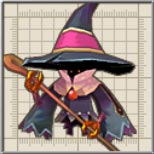
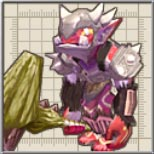

前作にも同名のキャラが登場しますが、グラフィックが異なります。
紙芝居でおなじみの・・・。
アルウェンの影も同じ姿ですね。
よく見ると窓からこぼるとが覗いています。

前作にも登場。

前作では色々な種類のメイドロボがいたのですが・・・。
ダンジョンでは壺の1つとしてカウントされるので注意が必要です。

目次 > ゲームについて > 日本Falcom 攻略 > ZWEI II > 敵キャラ一覧 > ムーンブリア城
らんの眼
ZWEI II (ツヴァイ 2、ZWEI II Plus)
| 概要 | 情報 | 攻略チャート |
| フード交換 | ペットについて | ボス戦 |
| 敵キャラ一覧 | ハンターランク | G-コロッセオ |
| アイテム一覧 | ガジェット一覧 | トレジャー一覧 |
| ダンジョン一覧 | クリアデータ特典 | Plusの追加要素 |
| ZWEI II攻略へ | 目次へ戻る |
| [ セクンドゥム廃坑 ] [ オルディウム神殿 ] [ 金闇の森 ] [ アウロン大鉄塔 ] [ ムーンブリア城 ] [ 星ヶ峰 ] [ ルナ＝ムンドゥス ] [ メルセデク ] |
| 名前 | 画像 | レベル | HP | フード | メモ |
| まっどねす | 14 | 5068 | ピザ | 生命の宿る泥の怪物。沼に隠れて奇襲攻撃をしかける。 | |
| ぞんび | 13 | 4255 | アジの開き | 生者を羨む動き回る屍。地から這い出て来て、群れで獲物を襲う。 前作にも同名のキャラが登場しますが、グラフィックが異なります。 |
|
| おうごんばっと | 13 | 4255 | アジの開き | 死者の怨念で凶暴化したコウモリ。神経を麻痺させる強力な超音波を放つ。 紙芝居でおなじみの・・・。 |
|
| うぃるおうぃすぷ | 14 | 5068 | ピザ | 闇に生きる霊魂。炎や闇の魔法を養分として取り込む。 | |
| うぃざーど |  | 15 | 5964 | 焼き鳥 | 転位と雷球の魔法を自在に操る魔術師。帽子の切れ目は自分で入れたもの。 アルウェンの影も同じ姿ですね。 |
| でゅらはん | 13 | 6382 | アジの開き | 呪いによって動き出した甲冑像。他の鎧に紛れ、侵入者から城を守る。 | |
| ぱさらん | 14 | 5068 | ピザ | 鋼鉄の鎧で体を覆ったけさらん。耳と尻尾を中に隠した完全防御は鉄壁。 | |
| でくぼっと | 14 | 10136 | ピザ | こぼるとが登場する木人。右手の鉄球をブン回す。火気厳禁。よく燃えます。 よく見ると窓からこぼるとが覗いています。 |
|
| おーがにくす |  | 14 | 5068 | ピザ | 鎧を纏って防御力を増したおーが。中は暑すぎてやってられないらしい。 |
| ぱにっしゃー | 13 | 4255 | アジの開き | 地下牢の処刑人。振り下ろされる斧からは衝撃波が発生する。 | |
| じごくぐるま | 13 | 4255 | アジの開き | 魔の鼠が操縦する車輪。可愛さに惑わされて轢かれないよう注意。 | |
| みみっく | |
13 | 4255 | アジの開き | 宝箱の姿のモンスター。欲をかいて近づくと痛い目を見るという冒険の基本。 前作にも登場。 |
| ちびくろうらー | 12 | 1761 | 生ハム | 成虫ほどの固さや繁殖力は無いが、大挙して人を襲う様は恐ろしいの一言。 | |
| くろうらー | |
16 | 6945 | マンゴー | 硬い体で飛びかかる魔虫(表記は虫が3つ)。生命の危機を感じると子供を2匹生み落とす。 |
| めたじぇりー | 13 | 6382 | アジの開き | 魔族によって精製された生きる液体金属。人体に有害な金属を数多く含む。 | |
| はねいもり | 14 | 5068 | ピザ | 全身バネのイモリの魔物。高い運動能力で空から獲物を仕留める。 | |
| くろおこじょ | 14 | 5068 | ピザ | 鎌の二刀流で侵入者の首を狙う、真っ黒なおこじょ。俊敏性が高い。 | |
| ばんのうめいど | 14 | 5068 | ピザ | ムーンブリア城に使えていたメイドロボ。おじぎの後に戦闘開始する几帳面。 前作では色々な種類のメイドロボがいたのですが・・・。 |
|
| つぼみみんがー | 15 | 5964 | 焼き鳥 | つぼみみっくの上位種。通常のものと姿は同じだが、強さは段違い。 ダンジョンでは壺の1つとしてカウントされるので注意が必要です。 |
|
| らびっとくらうん | 15 | 5964 | 焼き鳥 | とても臆病な魔法ウサギ。近づく者の動きを魔法で止め、すぐに転位して逃げる。 | |
| じゃがーのーと | |
16 | 10418 | マンゴー | 魔族が開発した特攻兵器。攻防一体の突進攻撃で数々の町を侵略した。 |
| まとろみみっく | 18 | 27514 | なし | 極めて巨大なつぼみみっく。体内に、一回り小さい同種族が入っている。 | |
| モンブラン | 14 | 3040 | なし | 「ゾンビ de カーニバル」を使い追いつめてくる。 | |
| ダイガルド | 14 | 30409 | なし | ラグナ達の実力をはかるために戦った様子。 | |
| テルミドール | 14 | 40546 | なし | ”魂食らい”<<グラムドリオン>> を使って攻撃してくる。 | |
| 名前 | 画像 | レベル | HP | フード | メモ |
| [ セクンドゥム廃坑 ] [ オルディウム神殿 ] [ 金闇の森 ] [ アウロン大鉄塔 ] [ ムーンブリア城 ] [ 星ヶ峰 ] [ ルナ＝ムンドゥス ] [ メルセデク ] |
| 概要 | 情報 | 攻略チャート |
| フード交換 | ペットについて | ボス戦 |
| 敵キャラ一覧 | ハンターランク | G-コロッセオ |
| アイテム一覧 | ガジェット一覧 | トレジャー一覧 |
| ダンジョン一覧 | クリアデータ特典 | Plusの追加要素 |
| ページの上部へ | ZWEI II 攻略へ | 目次へ戻る |